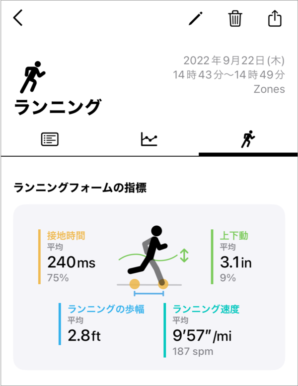

ヘルプ
ランニングフォームの指標

屋外ランニングを行うと、ランニングフォームの指標が記録されます。
ランニングフォームの指標は、ワークアウト詳細の3つ目のタブに表示されます。
測定に必要な環境
- watchOS 9.0 以上
- Zones version 6.0 以上
- ランニングフォーム関連の項目の「読み込み」と「書き込み」の許可
トラブルシューティング
ランニングフォームの指標が記録されない
- 「室内」のランニングでは記録されません。
- watchOS 9 以上、Zones Version 6 以上であることを確認します。
-
ヘルスケアアプリで以下の項目の「読み込み」「書き込み」権限が両方とも許可になっていることを確認します。
- 上下動
- 接地時間
- ランニングの歩幅
- ランニング速度
- 「読み込み」と「書き込み」は別のスイッチ（行）で表示されています。両方とも許可にする必要があります。
- ヘルスケアで、「書き込み」権限のスイッチがない（行そのものがない）場合は、全ての項目を許可リクエストをお試しください。
ランニング速度は記録されるが、上下動などの他項目が記録されない
上下動などの項目は、走っているときのみ記録され、歩いている時には記録されないようです。
この判断は、watchOS が行なっています。
他アプリで記録したワークアウトで指標が表示されない
他アプリが、ランニングフォームの指標の記録に対応している必要があります。
指標の値が間違っている
ランニングフォームの指標の値は、watchOSが算出しています。
Watchが正しく機能するように、以下をお試しください。